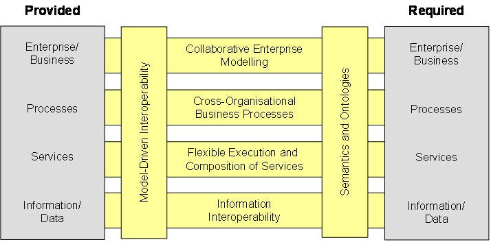
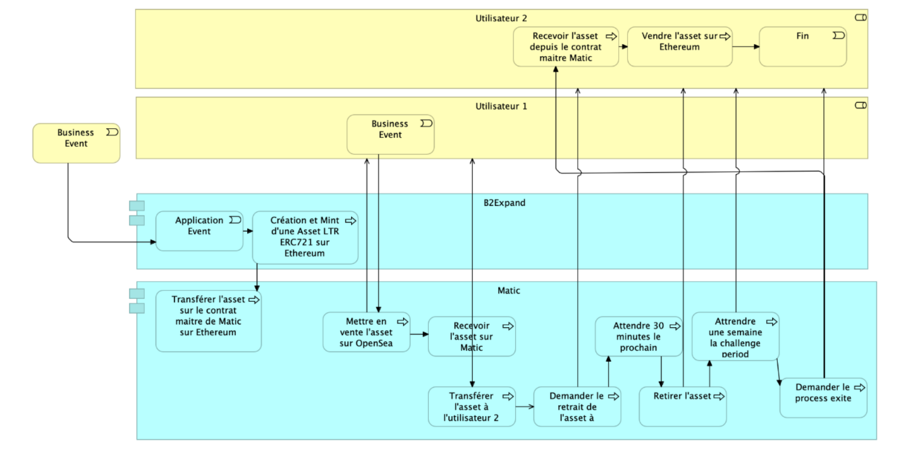
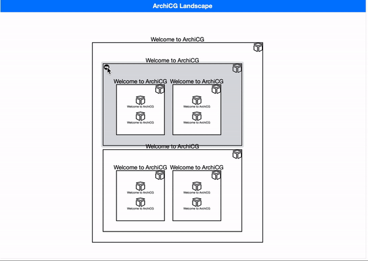
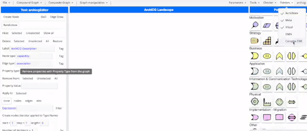
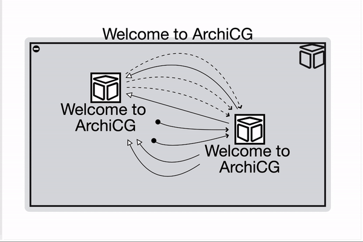
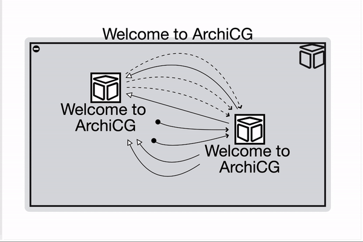

Interopérabilité augmentée
Blockchain et IA au service de la décarbonation
et de la traçabilité industrielle
par le Dr Nicolas Figay, Airbus
Expert Interopérabilité Opérationnelle Continue
Collaborateur LIRIS (Pr P. Ghodous) et Quartz(Pr D.Tchoffa)
Blockchain et IA au service de la décarbonation
et de la traçabilité industrielle
Résumé
La décarbonation et la traçabilité exigent plus que des innovations technologiques : elles appellent à une collaboration numérique sans silos entre organisations, processus et systèmes. Cette intervention explore comment l'IA et la Blockchain peuvent être intégrées dans des démarches d'interopérabilité basées sur les normes, pour ancrer la décarbonation et la traçabilité dès la phase d’ingénierie des systèmes. À travers une approche ouverte et normalisée, nous montrerons comment orchestrer efficacement données, processus et acteurs tout en capitalisant sur la confiance distribuée et l’intelligence adaptative.
L'intervenant
Le Dr. Nicolas Figay est un expert reconnu en ingénierie des systèmes, en architecture d'entreprise et en interopérabilité des systèmes complexes. Fort d'une vaste expérience dans des initiatives industrielles et européennes, il a contribué à de nombreux projets stratégiques promouvant les normes ouvertes et les cadres d'interopérabilité pour soutenir la transformation numérique. Son travail relie les couches techniques et organisationnelles, favorisant une collaboration significative entre des systèmes divers.
Pourquoi cette intervention ?
- Répondre aux exigences de décarbonation et de traçabilité
- Montrer que l’interopérabilité est un facteur clé de succès
- Introduire le rôle des cadres d'interopérabilité
- Explorer leur rôle structurant pour l’IA et de la Blockchain
- ... et pour la traçabilité industrielle pour les besoins émergents
Un défi systémique et enjeu industriel
- Pressions réglementaires & attentes sociétales
- Complexité des chaînes d'approvisionnement
- Multiplication des parties prenantes
- Hétérogénéité des systèmes d’information & silos organisationnels
- Exigence de durabilité réglementaire (Corporate Sustainability Reporting Directive, Greenhouse Gas Protocol)
- Risque de silos dans les initiatives Environnement, Social et Gouvernance
Définir la traçabilité comme un enjeu systémique
- Origine des matériaux & impact carbone
- Empreinte des processus industriels
- Suivi en boucle fermée
Blockchain : un socle de confiance distribué
- Inaltérabilité des événements
- Contrats intelligents
- Identités distribuées
IA pour des systèmes adaptatifs
- Apprentissage sur les cycles de vie
- Détection d’anomalies
- Graphes de connaissances
Interopérabilité augmentée
Combiner
- Normes & modèles ouverts pour l’interopérabilité sémantique
- Blockchain pour l’intégrité, la traçabilité et la confiance
- IA pour l’aide à la décision, la cohérence et l’adaptation
Normes & standards à appliquer
Pour l’interopérabilité
Soutien à la continuité numérique - Pas d'industrialisation sans normes!
Garants de la portabilité et gouvernance
Ingénierie Système, Architecture d'entreprise, PLM
- ISO 10303 (STEP Echange de données décrivant produits et processus)
- OPC UA (Open Platform Communications Unified Architecture)
- Ontology Web Langauge / Ressource Description Framework / SHApe Constraint Language
- ArchiMate, Unified Architecture Language (UAF)
- Process Modeling Notation (BPMN), Unified Modeling Language (UML)
Normes & standards à appliquer
Pour le développement durable
- ISO 14001, ISO 14044 : 2006 - "Environmental management — Life cycle assessment — Requirements and guidelines"
- ISO 14001 : 2015 - "Systèmes de management environnemental — Exigences et lignes directrices pour son utilisation"
- Greenhouse Gas Protocol Protocol (Scopes 1-2-3)
- ISO 50001 (énergie), ISO 20400 (achats responsables)
- Product & Organisations Environmental Footprint, Global Reporting Initiative Standards
- Corporate Sustainability Reporting Directive, ESRS : European Sustainability Reporting Standards
Interopérabilité au-delà des formats
Interopérer, ce n’est pas juste échanger :
c’est comprendre, exploiter, collaborer
- Interopérabilité technique
- Interopérabilité sémantique
- Interopérabilité organisationnelle
Interopérabilité augmentée
Architecture cible
Architecture modulaire basée sur des normes ouvertes
Cartographie sémantique
Représenter les intentions, les relations, les contextes
- Visualisation unifiée des couches métiers, systèmes, techniques
- Navigation dans la complexité
- Projection des impacts
Un exemple de cartographie sémantique
appliqué à des technologies blockchain
Issu de INTEROPÉRABILITÉ DES PROCESSUS MÉTIERS SUPPORTÉS PAR LA BLOCKCHAIN
Les hypermodèles
Des modèles multi-niveaux et multi-langages connectés
- ArchiMate, SysML, BPMN, OWL…
- Lien entre modèles et données opérationnelles
- Support à la gouvernance
ArchiCG : la cartographie sémantique augmentée en open source
- Prototype fondé sur Cytoscape.js et W2UI.js
- Support des hypermodèles et langages métiers
- Graphes composés, filtres dynamiques, palettes modulaires
- Visant l'innovation collaborative et collective impliquant industriels et chercheurs
ArchiCG : cartes sémantiques interactives
 
 

Merci
Dr. Nicolas Figay
Expert en Interopérabilité, Airbus Defence & Space